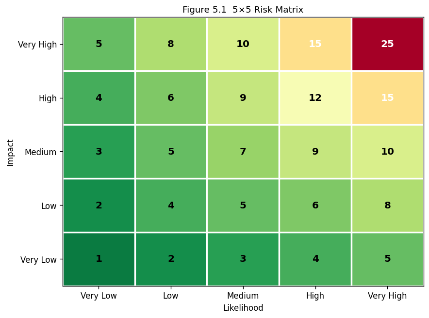

5. Chapter 5: Risk Management and Governance#
“If you think technology can solve your security problems, then you do not understand the problems and you do not understand the technology.” Bruce Schneier
5.1. Learning Objectives#
After completing this chapter, you will be able to:
Define risk and distinguish threat, vulnerability, and impact.
Apply qualitative and quantitative risk assessment techniques.
Calculate SLE, ALE, and ROSI and use them to justify security investment.
Apply the four risk treatment options to a given scenario.
Construct and use a risk matrix to prioritize findings.
Explain the roles of governance frameworks including ISO 27001 and NIST RMF.
Describe business continuity and disaster recovery concepts and key metrics.
Distinguish compliance from security and explain why compliance is insufficient.
5.2. Key Terms#
Risk: the probability that a threat will exploit a vulnerability, weighted by impact.
Threat: an event or actor with potential to cause harm.
Vulnerability: a weakness that can be exploited.
Impact: the consequence of a successful attack.
Risk appetite: the level of risk an organization is willing to accept.
SLE: Single Loss Expectancy = Asset Value × Exposure Factor.
ALE: Annualized Loss Expectancy = SLE × ARO.
ARO: Annualized Rate of Occurrence.
ROSI: Return on Security Investment.
ISO/IEC 27001: international standard for an Information Security Management System (ISMS).
NIST RMF: NIST Risk Management Framework.
BCP/DRP: Business Continuity Plan / Disaster Recovery Plan.
RTO: Recovery Time Objective; maximum tolerable downtime.
RPO: Recovery Point Objective; maximum tolerable data loss window.
GRC: Governance, Risk, and Compliance.
5.3. Foundations of Risk Management#
Risk management is the discipline of making defensible, resource-constrained decisions about how to protect assets. Security resources are always finite; risk management determines where to deploy them for maximum effect. The alternative, addressing every possible threat equally, is both economically impossible and strategically incoherent.
5.3.1. Risk as a Function of Three Variables#
Risk = Threat × Vulnerability × Impact. This is not always expressed as a literal product, but the relationship is important: eliminating any one factor eliminates the risk. Reducing the threat (threat intelligence, law enforcement) reduces risk. Reducing the vulnerability (patching, hardening) reduces risk. Reducing the impact (backup, insurance, segmentation) reduces risk. Risk managers identify which lever is most cost-effective.
5.3.1.1. Risk Versus Hazard#
A hazard is a static property of something (a cliff edge). A risk is the probabilistic interaction between a hazard and an exposed party (the likelihood and consequence of someone falling off the cliff). Cybersecurity hazards (unpatched systems) become risks when a threat actor exists, has capability, and has motivation to exploit them.
5.3.2. Risk Identification#
Risk identification produces a list of scenarios: “An external attacker exploits CVE-2024-XXXX in the public-facing web application, exfiltrating the customer database.” For each scenario the risk manager records the affected asset, the threat source, the exploited vulnerability, and the estimated impact. NIST SP 800-30 [NationalIoSaTechnology12] provides the definitive framework for conducting risk assessments.
5.4. Quantitative Risk Assessment#
5.4.1. Single Loss Expectancy#
SLE is the expected monetary loss from a single occurrence of a risk:
SLE = Asset Value × Exposure Factor
The exposure factor (EF) is the fraction of the asset’s value expected to be lost. For a \(2,000,000 database, if a breach is expected to expose 40% of records with a resulting cost of \)800,000: SLE = \(2,000,000 × 0.40 = \)800,000.
5.4.2. Annualized Loss Expectancy#
ALE annualizes the expected loss by multiplying by the probability of occurrence per year:
ALE = SLE × ARO
If the breach probability is 30% per year: ALE = \(800,000 × 0.30 = \)240,000.
5.4.2.1. Using ALE for Prioritization#
Organizations should prioritize controls that reduce the highest ALE risks. A low-likelihood, catastrophic event (ALE \(500k) may warrant more investment than a high-likelihood, minor event (ALE \)50k). However, frequency matters for operational disruption even when ALE is similar.
5.4.3. Return on Security Investment#
ROSI measures whether a proposed control is economically justified:
ROSI = (ALE_before - ALE_after - Control_Cost) / Control_Cost
A positive ROSI means the control is financially justified. The ratio tells management how much benefit is produced per dollar invested.
5.5. Risk Treatment#
Once a risk is understood, there are exactly four treatment options. Every accepted risk should be documented and formally owned.
5.5.1. Mitigate#
Mitigation reduces the likelihood or impact of a risk through a control. A patching programme reduces the likelihood that a known vulnerability is exploited. A backup system reduces the impact of ransomware. Mitigation is the default treatment for material risks.
5.5.1.1. Control Selection#
Controls should be proportionate to the risk they address. Spending \(100,000 to mitigate a \)50,000 ALE is not justified unless other factors (regulatory, reputational) are in play. NIST SP 800-53 catalogs specific controls organized by family (access control, audit, configuration management, etc.) that can be selected based on risk level.
5.5.2. Transfer#
Transfer shifts the financial consequence of a risk to a third party. Cyber insurance covers incident response costs, notification costs, regulatory fines, and business interruption losses. Contractual clauses that require vendors to indemnify for breaches caused by their software are another form of risk transfer. Transfer does not eliminate the operational disruption; it only addresses the financial impact.
5.5.3. Avoid#
Avoidance eliminates the activity that creates the risk. If a small company considers launching a consumer-facing application that would require storing payment card data (incurring PCI DSS obligations), the risk can be avoided by using a payment processor that handles all card data, removing the company from PCI scope entirely. Avoidance is often the most overlooked option.
5.5.4. Accept#
Acceptance acknowledges a risk and decides not to treat it further, typically because the cost of treatment exceeds the expected loss. Acceptance must be documented, dated, reviewed periodically, and signed by someone with the authority to accept it on behalf of the organisation. Undocumented acceptance is negligence.
5.6. Qualitative Risk Assessment#
5.6.1. The Risk Matrix#
A risk matrix plots likelihood against impact on an ordinal scale (typically 1-5 or High/Medium/Low) and assigns a risk score to each cell. The result is a heat map that communicates risk priority to non-technical stakeholders. Risks in the high-likelihood/high-impact quadrant demand immediate treatment; risks in the low/low quadrant may be accepted.
5.6.1.1. Limitations of Qualitative Assessment#
Ordinal scores are subjective and inconsistent across raters. “High likelihood” means different things to different people. Qualitative matrices should be calibrated with definitions: “High likelihood = more than once per year” rather than an undefined label. For material risks, qualitative assessment should be validated with quantitative data where available.
5.7. Governance Frameworks#
5.7.1. ISO/IEC 27001#
ISO 27001 specifies requirements for an Information Security Management System (ISMS): the policies, processes, procedures, organizational structures, and tools that systematically manage information security risk. It uses a Plan-Do-Check-Act (PDCA) cycle. Certification is granted by an accredited third-party auditor after demonstrating that the ISMS is implemented and operating effectively.
5.7.1.1. Annex A Controls#
ISO 27002 (the companion code of practice) provides 93 controls organized into four themes: organizational controls, people controls, physical controls, and technological controls. ISO 27001 certification does not require implementing all 93 controls; it requires implementing all controls relevant to identified risks and documenting the Statement of Applicability (SoA) for excluded ones.
5.7.2. NIST Risk Management Framework#
The NIST RMF is a six-step process: Prepare, Categorize, Select, Implement, Assess, Authorize, and Monitor. It is mandatory for US federal information systems and widely adopted outside government. System categorization uses FIPS 199 to assign a High/Moderate/Low impact level that drives control selection from NIST SP 800-53.
5.8. Business Continuity and Disaster Recovery#
5.8.1. BCP and DRP#
A Business Continuity Plan (BCP) describes how an organization continues critical operations during a disruptive event. A Disaster Recovery Plan (DRP) focuses specifically on restoring IT systems after a catastrophic failure. The two documents are complementary: the BCP describes the business process workarounds; the DRP describes the technical recovery steps.
5.8.2. Key Metrics#
RTO (Recovery Time Objective): the maximum time a system can be unavailable before the business impact becomes unacceptable. A patient monitoring system might have an RTO of 30 minutes; a marketing analytics platform might tolerate 48 hours.
RPO (Recovery Point Objective): the maximum tolerable data loss measured in time. An RPO of 4 hours means backups must be taken at least every 4 hours. Transaction-based systems (banking) may require an RPO of near zero.
MTTR (Mean Time to Repair): average time to restore a failed system.
MTBF (Mean Time Between Failures): average time between system failures; relevant for hardware procurement.
5.8.2.1. Testing Requirements#
A plan that has never been tested will fail. BCP/DRP testing progresses from tabletop exercises (discuss the plan) through parallel tests (run recovery systems while production continues) to full cutover tests (actually fail over and verify recovery). Many organizations only perform tabletop exercises, which are insufficient to discover technical gaps.
5.9. Compliance Versus Security#
Compliance satisfies a documented set of requirements and provides legal protection and business access. Security reduces actual risk. The two overlap substantially, but:
A compliant organisation can still be breached if its controls meet the letter but not the spirit of the requirement.
A secure organisation may not be formally compliant if it uses equivalent controls not listed in the standard.
Compliance is binary (pass/fail); security is a continuous spectrum.
The correct framing is that compliance is a floor, not a ceiling. Organisations that treat compliance as the end goal systematically under-invest in security above the compliance baseline.
5.10. Why This Matters#
Every capital expenditure in security competes with other organisational priorities. Risk management is the language that allows security practitioners to speak to executives: it quantifies the problem, presents treatment options with costs and benefits, and recommends a course of action. Practitioners who can compute ALE and ROSI can justify budgets; those who cannot are forced to rely on fear and hope.
5.11. News in Focus#
A pattern in post-breach analysis is that the breached organisation had accepted a risk without formal documentation, often because the cost of treatment seemed high relative to the perceived likelihood. When the event occurred, there was no documented acceptance and no designated owner, leading to a governance failure finding in addition to the technical one. Regulatory investigations in healthcare and financial services have treated undocumented risk acceptance as evidence of negligence, resulting in higher penalties.
# Chapter 5 -- Worked Examples: risk matrix + ROSI + risk-reduction
# ── Risk matrix visualisation ─────────────────────────────────────────────────
import matplotlib
matplotlib.use('Agg')
import matplotlib.pyplot as plt
import numpy as np
from io import BytesIO
from IPython.display import display, Image
fig, ax = plt.subplots(figsize=(8, 6))
# 5x5 heat map: rows=impact (1=low,5=high), cols=likelihood
heat = np.array([
[1, 2, 3, 4, 5],
[2, 4, 5, 6, 8],
[3, 5, 7, 9, 10],
[4, 6, 9,12, 15],
[5, 8,10,15, 25],
], dtype=float)
colors = plt.cm.RdYlGn_r(heat / 25)
for i in range(5):
for j in range(5):
ax.add_patch(plt.Rectangle((j, i), 1, 1, facecolor=colors[i,j], edgecolor='white', lw=2))
ax.text(j+0.5, i+0.5, str(int(heat[i,j])), ha='center', va='center',
fontsize=12, fontweight='bold',
color='white' if heat[i,j] > 12 else 'black')
ax.set_xlim(0,5); ax.set_ylim(0,5)
ax.set_xticks([0.5,1.5,2.5,3.5,4.5])
ax.set_xticklabels(['Very Low','Low','Medium','High','Very High'])
ax.set_yticks([0.5,1.5,2.5,3.5,4.5])
ax.set_yticklabels(['Very Low','Low','Medium','High','Very High'])
ax.set_xlabel("Likelihood", fontsize=10)
ax.set_ylabel("Impact", fontsize=10)
ax.set_title("Figure 5.1 5×5 Risk Matrix", fontsize=11)
_buf = BytesIO()
plt.savefig(_buf, format='png', dpi=120, bbox_inches='tight')
plt.close(); _buf.seek(0)
display(Image(data=_buf.read()))
# ── Quantitative examples ─────────────────────────────────────────────────────
print("\n=== Worked Quantitative Examples ===\n")
risks = [
dict(name="Database breach", asset=2_000_000, ef=0.40, aro=0.30, ctrl_cost=60_000, ctrl_eff=0.85),
dict(name="Ransomware (servers)",asset=1_500_000, ef=0.60, aro=0.20, ctrl_cost=40_000, ctrl_eff=0.90),
dict(name="Phishing credential", asset= 500_000, ef=0.20, aro=0.70, ctrl_cost=15_000, ctrl_eff=0.70),
]
for r in risks:
sle = r['asset'] * r['ef']
ale_before = sle * r['aro']
ale_after = ale_before * (1 - r['ctrl_eff'])
benefit = ale_before - ale_after
rosi = (benefit - r['ctrl_cost']) / r['ctrl_cost'] * 100
print(f" Risk: {r['name']}")
print(f" SLE: ${sle:,.0f} ALE: ${ale_before:,.0f} ALE after control: ${ale_after:,.0f}")
print(f" Annual benefit: ${benefit:,.0f} Control cost: ${r['ctrl_cost']:,.0f}")
print(f" ROSI: {rosi:.0f}% -- {'JUSTIFIED' if rosi>0 else 'NOT justified'}\n")
# ── Risk-reduction from encryption example (from course slide) ─────────────────
p_unencrypted = 0.40
p_encrypted = 0.08
ale_per_breach = 2_000_000
print("=== Risk Reduction via Encryption ===")
print(f" ALE unencrypted : ${p_unencrypted * ale_per_breach:,.0f}")
print(f" ALE encrypted : ${p_encrypted * ale_per_breach:,.0f}")
print(f" Annual saving : ${(p_unencrypted - p_encrypted) * ale_per_breach:,.0f}")

=== Worked Quantitative Examples ===
Risk: Database breach
SLE: $800,000 ALE: $240,000 ALE after control: $36,000
Annual benefit: $204,000 Control cost: $60,000
ROSI: 240% -- JUSTIFIED
Risk: Ransomware (servers)
SLE: $900,000 ALE: $180,000 ALE after control: $18,000
Annual benefit: $162,000 Control cost: $40,000
ROSI: 305% -- JUSTIFIED
Risk: Phishing credential
SLE: $100,000 ALE: $70,000 ALE after control: $21,000
Annual benefit: $49,000 Control cost: $15,000
ROSI: 227% -- JUSTIFIED
=== Risk Reduction via Encryption ===
ALE unencrypted : $800,000
ALE encrypted : $160,000
Annual saving : $640,000
5.12. Review Questions (MCQ)#
Q1. A risk with a 10% annual probability and a \(500,000 SLE has an ALE of: A. \)500,000 B. \(50,000 C. \)5,000,000 D. $5,000
Q2. A company stops storing payment card data to avoid PCI DSS scope. This is which risk treatment? A. Transfer B. Mitigate C. Accept D. Avoid
Q3. Cyber insurance is an example of which risk treatment? A. Mitigate B. Transfer C. Accept D. Avoid
Q4. ROSI is positive when: A. The control costs more than it saves B. The organisation has a mature ISMS C. The benefit from reduced ALE exceeds the control cost D. The risk is qualitatively rated High
Q5. RPO measures: A. How quickly systems must be restored B. The maximum tolerable data loss window C. The annual frequency of incidents D. The patch deployment timeline
Q6. ISO 27001 certification requires implementing: A. All 93 Annex A controls B. Controls relevant to identified risks, documented in the SoA C. NIST 800-53 low-baseline controls D. Only technical controls
Q7. A formal risk acceptance must be: A. Verbal to maintain plausible deniability B. Documented, owned, and reviewed periodically C. Unlimited in duration D. Approved only by IT management
Q8. Which testing type for BCP/DRP actually fails over to recovery systems? A. Tabletop exercise B. Walk-through test C. Parallel test D. Full cutover test
Q9. NIST SP 800-30 is primarily used for: A. Selecting cryptographic algorithms B. Conducting information security risk assessments C. Incident response planning D. Physical security design
Q10. The correct relationship between compliance and security is: A. Compliance equals security B. Compliance is a ceiling above which further investment is wasteful C. Compliance is a necessary floor; security extends above it D. Security is a subset of compliance
Answers: Q1 B, Q2 D, Q3 B, Q4 C, Q5 B, Q6 B, Q7 B, Q8 D, Q9 B, Q10 C.
5.13. Lab Assignment#
Part A – Asset valuation and ALE: Identify five assets for a fictional 200-person company. For each, estimate an asset value, an exposure factor for the most likely breach scenario, and an ARO. Compute SLE and ALE. Rank them by ALE.
Part B – Control justification: For the top-two ALE risks, propose one control each. Estimate the control’s annual cost and its effectiveness (% ALE reduction). Compute ROSI. Write a one-paragraph executive summary justifying or rejecting each control.
Part C – Risk matrix: Using a 5×5 likelihood/impact matrix, plot eight risks from Part A and two additional risks you identify. Assign each a treatment (mitigate/transfer/accept/avoid) and justify it.
Part D – BCP metrics: Define RTO and RPO for four systems of a hypothetical hospital (patient monitoring, EHR database, billing, email). Specify the backup technology and schedule that would meet each RPO, and the recovery steps that would meet each RTO.
5.14. References#
National Institute of Standards and Technology. Guide for conducting risk assessments. Technical Report NIST SP 800-30 Rev. 1, U.S. Department of Commerce, 2012. doi:10.6028/NIST.SP.800-30r1.